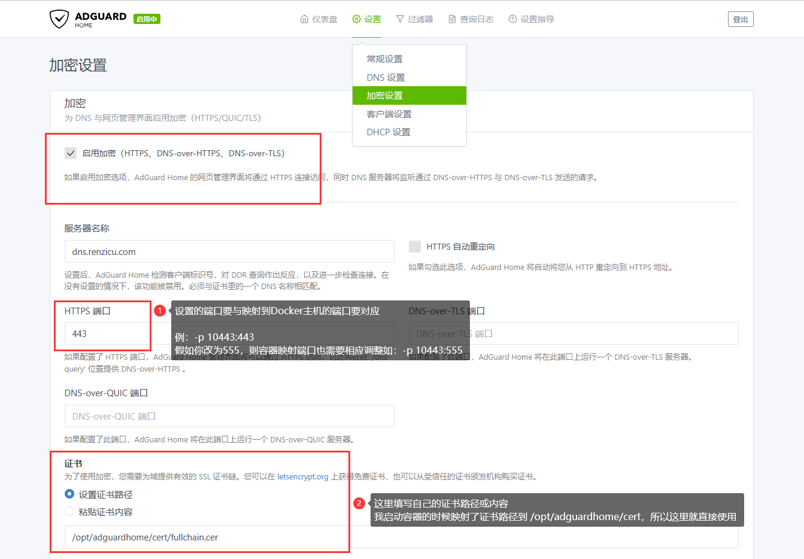
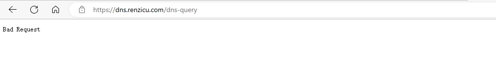

选择 AdGuardHome 配置 DNS-over-HTTPS（doh）服务器优势：安装简单，可视化，广告拦截。以 Debian 系统为例。
安装前准备
- 域名
example.com
- DNS 添加 A 记录
doh.example.com
- VPS，要求延迟要低。
安装证书
安装 Nginx：
$ sudo apt install nginx
安装certbot：
$ sudo apt install certbot
$ certbot --version
从Let's Encrypt获取证书：
$ sudo certbot certonly --standalone --preferred-challenges http --agree-tos --email you@example.com -d doh.example.com
证书放置在/etc/letsencrypt/live/doh.example.com/目录下。
测试自动更新证书是否正常
$ sudo certbot renew --dry-run
正常的话，设定两个月自动更新一次证书：
$ sudo crontab -e
# 选择 `nano`，复制以下内容保存。
0 0 15 */2 * /usr/bin/certbot renew --quiet
安装AdGuardHome
使用以下命令自动安装 AdGuardHome：
curl -s -S -L https://raw.githubusercontent.com/AdguardTeam/AdGuardHome/master/scripts/install.sh | sh -s -- -v
VPS防火墙临时放行3000。浏览器访问ip:3000，根据引导进行操作。
配置 DOH（DNS-over-HTTPS）

这里不勾选HTTPS自动重定向，HTTPS端口填写8443。
AdGuardHome控制命令：
$ sudo /opt/AdGuardHome/AdGuardHome -s start|stop|restart|statuslinstallluninstall
配置Nginx
创建/etc/nginx/conf.d/doh.conf，内容如下：
server {
listen 80;
listen 443 ssl http2;
server_name doh.example.com; #这里填写域名
index index.php index.html index.htm default.php default.htm default.html
root /usr/share/nginxt/html; #网站根目录，指定一个空文件夹即可
#强制HTTPS
if ($server_port !~ 443){
rewrite ^(/.*)$ https://$host$1 permanent;
}
# HTTPS证书
ssl_certificate /etc/letsencrypt/live/doh.example.com/fullchain.pem;
ssl_certificate_key /etc/letsencrypt/live/doh.example.com/privkey.pem;
#反向代理仪表盘(可以不配置)
location ^~ / {
proxy_pass https://127.0.0.1:8443/;
proxy_set_header Host $host;
proxy_set_header X-Real-IP $remote_addr;
proxy_set_header X-Forwarded-For $proxy_add_x_forwarded_for;
proxy_set_header REMOTE-HOST $remote_addr;
}
#反向代理DoH
location ^~ /dns-query {
proxy_pass https://127.0.0.1:8443;
proxy_set_header Host $host;
proxy_set_header X-Real-IP $remote_addr;
proxy_set_header X-Forwarded-For $proxy_add_x_forwarded_for;
proxy_set_header REMOTE-HOST $remote_addr;
}
}
测试Nginx配置是否正确：
$ nginx -t
重启Nginx：
$ sudo systemctl restart nginx.service
如果nginx代理配置没有问题，使用浏览器访问https://doh.example.com/dns-query会出现Bad Request信息：

之后便可以在浏览器或手机上使用自建的doh服务。
参考资料